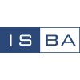
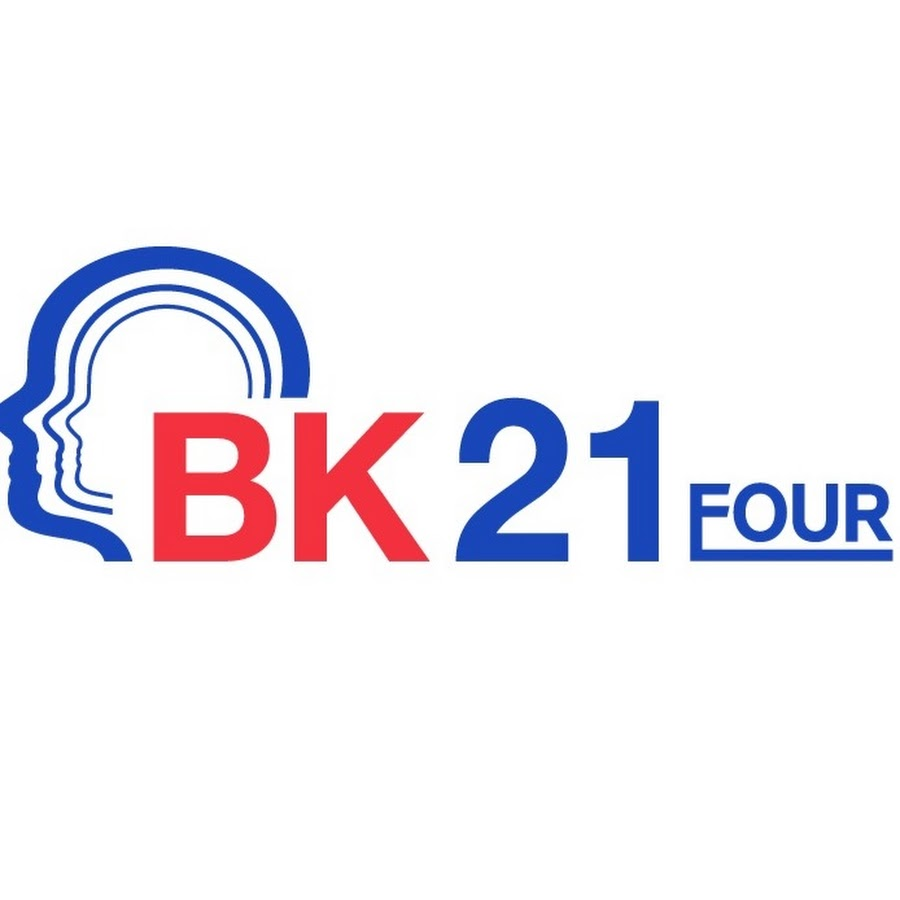

M.S. in Statistics
Kyungpook National University
Sep 2025 - Feb 2027 (Expected)
- Additional Major in ABB (AI, Big Data, and Blockchain)
- GPA: 4.00/4.00
Department of Statistics, Kyungpook National University
I focus on Bayesian learning and scalable statistical inference for massive, high-dimensional data, with ongoing work on extended synthetic control methods.
Academic degrees and training
M.S. in Statistics
Kyungpook National University
Sep 2025 - Feb 2027 (Expected)
B.S. in Statistics
Busan, Republic of Korea
Mar 2020 - Aug 2025
Assistantships and projects
Graduate Research Assistant
Bayesian Statistical Learning Lab, KNU
Sep 2025 - Present
Undergraduate Researcher
Bayesian Statistical Learning Lab, KNU
Sep 2024 - Aug 2025
Research Assistant
Institute for Multicultural Social Policy, Daegu University
Dec 2019 - Feb 2020
Scholarships and funded programs
Brain Korea 21 (BK21) FOUR Graduate Fellowship
Education Research Team for Statistical Learning, KNU
Spring 2026
National graduate research fellowship funded by the Ministry of Education of Korea.
Scholarship for Academic Excellence
Graduate School of Statistics, KNU
Spring 2026
Merit-based scholarship for graduate academic performance.
Daegu RISE-ABB Track Scholarship
Daegu RISE Center and Kyungpook National University
Fall 2025
Regional innovation scholarship for excellence in ABB track (AI, Big Data, Blockchain).
Brain Korea 21 (BK21) FOUR Undergraduate Fellowship (JUNIOR-BK21)
Education Research Team for Statistical Learning, KNU
Spring 2025
National undergraduate research fellowship funded by the Ministry of Education of Korea.
Conference and invited presentations

ISBA 2026 World Meeting (Poster, Accepted)
Nagoya, Japan
Jul 2026
Scalable Gibbs sampler using randomized sketching for massive and high-dimensional Bayesian regression.

BK21 FOUR Summer Workshop, Educational Research Team for Statistical Learning (Presentation)
Busan, Republic of Korea
Jun 2026
Scalable Gibbs sampler using randomized sketching for massive and high-dimensional Bayesian regression.
Research Visit Talk, Dept. of Statistics, UCONN (Presentation)
Storrs, CT, USA
Feb 2026
Scalable Gibbs sampler using randomized sketching for massive and high-dimensional Bayesian regression.
BK21 FOUR Winter Workshop, Educational Research Team for Statistical Learning (Presentation)
Busan, Republic of Korea
Jan 2026
Introduction to Bayesian neural networks from fundamentals of MLP to Bayesian inference.
Joint Statistical Meetings 2025 (Poster)
Nashville, TN, USA
Aug 2025
Scalable Bayesian regression with massive and high-dimensional data.
Korean Statistical Society 2025 (Poster)
Gyeongju, Republic of Korea
Jul 2025
Scalable Bayesian regression with massive and high-dimensional data.
Leadership and committee roles
Graduate Student Representative
Department of Statistics, KNU
Sep 2025 - Aug 2026
Webmaster, 4th Bayesian Nonparametrics Networking Workshop
Bayesian Nonparametric Section of ISBA, Seoul
Workshop WebsiteSep 2025 - Jul 2026
Organizing Committee Member, EAC-ISBA Conference 2025
Eastern Asia Chapter of ISBA, Daegu
Conference WebsiteFeb 2025 - Jul 2025
Software teaching assistance and instructional support experience
Software Teaching Assistant (SW-TA)
Multivariate Data Analysis and Laboratory, KNU
Fall 2025
Academic and professional recognitions
Second Prize, Poster Award
Korean Statistical Society (KSS)
Jul 2025
Scalable Bayesian regression with massive and high-dimensional data
Commissioner's Award
Intellectual Property Idea Competition (KIPO)
May 2025
First Prize
KNU Statistics Concert: Data Analysis Competition
Dec 2024
Analysis of Traditional Market Revitalization Factors in Daegu Region
First Prize
Hongcheon-gun Public Data Analysis Competition
Nov 2024
Selection of the optimal location for dispatching medical personnel to vulnerable areas with access to medical care in Hongcheon-gun
Fourth Prize
KNU Statistics Concert: Data Analysis Competition
Nov 2023
A Study on the Change of Traffic Flow in the City according to Rainfall
Academic Excellence Award
Department of Statistics, KNU
Jul 2023
Subject: R Programming and Experiment
Distinguished Service Commendation
Daegu Metropolitan City, Republic of Korea
Dec 2022
First Prize
Big Data Analysis Presentation, Korean Cultural Centre of NIKL
Apr 2018
Data Analysis of Autonomous Vehicle News Articles Using Morpho-Based Natural Language Processing
Industry and field experience
Lead Audiovisual Technician
CCC (CRU), Daegu
Aug 2023 - Jul 2024
Led setup and live operation of audio and visual systems for events and ministry programs.
Administrative Assistant
Daegu-Gyeongbuk Regional Office, Ministry of SMEs and Startups (MSS)
Oct 2021 - Jan 2023
Supported administrative workflows and documentation for regional public-sector operations.
KATUSA
HQ, NCOA, U.S. 8th Army (USAG Humphreys)
Mar 2021 - Aug 2021
Served in a multinational military environment as Korean Augmentation to the United States Army.
Graphic Designer
Korean Cultural Center (KCC), Daegu
Jun 2018 - Mar 2019
Produced visual assets and promotional materials for cultural programs and communication campaigns.
Technical and language capabilities
Programming
Web and Tools
Languages